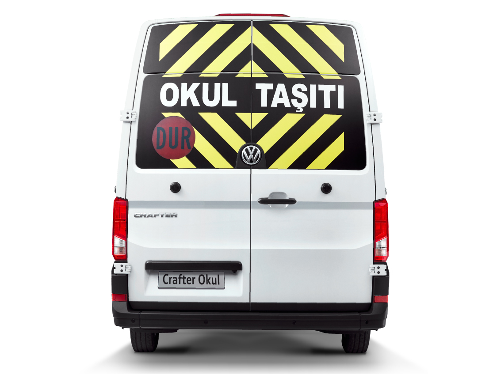
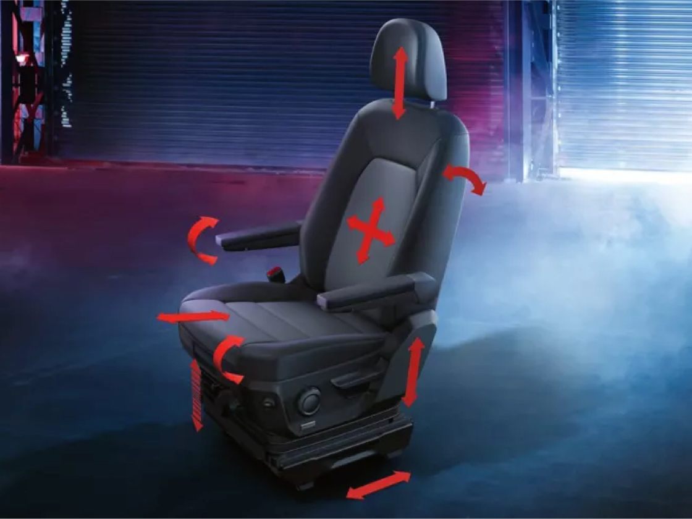
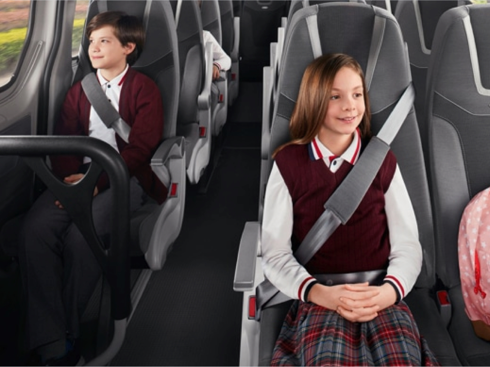
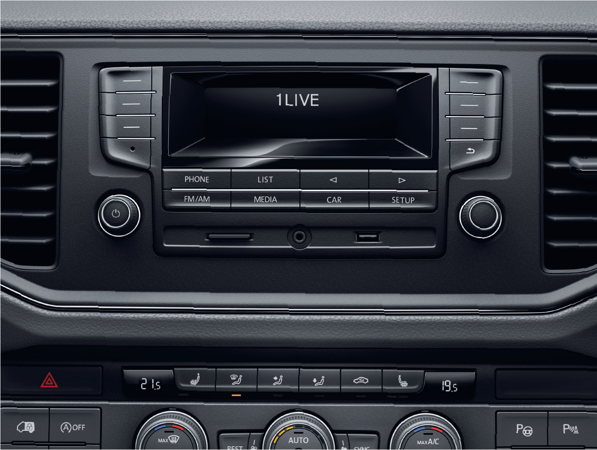
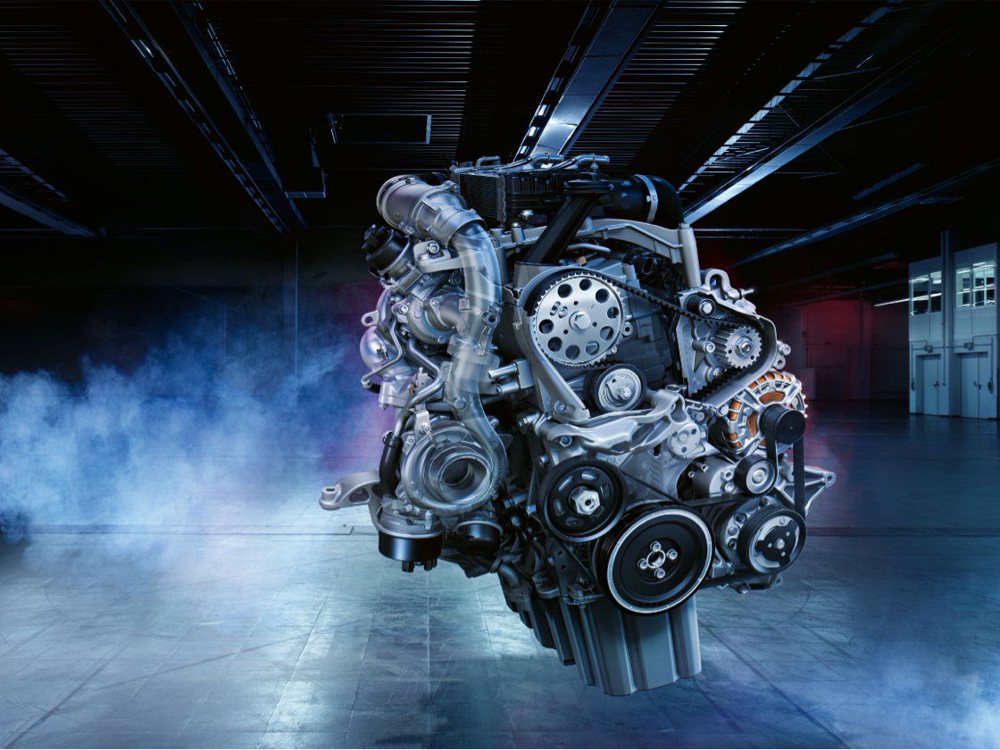
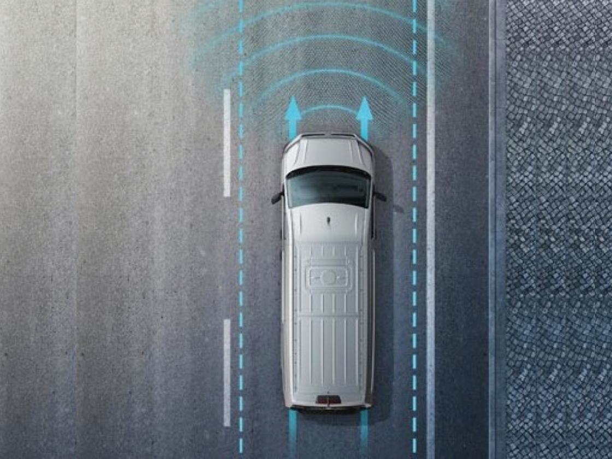

Crafter Okul
Tüm sınavları tam notla geçti.

Okul mevzuatına uygun donanım
Okul taşıtı etiketi. Dur lambası. Dış analog kameralara
3 adet kayıt alabilen iç IP Kamera
Okul araçlarının içinde bulunan 3 adet kameranın, yasal mevzuata uygun olarak kayıt alma suresi UKOME şartnamesine göre ayarlanabilmektedir.
Yolcu koltuk sensörleri ve uyarı sistemi
Koltukta yolcu olup olmadığını görsel olarak sürücünün anlamasını sağlayan sistem sayesinde yolcu güvenliği artırılıyor.
Yeni bir adım attık, öğrenciler için yeniden boyutlandırdık.

Halojen farlar ve gündüz sürüş farları
Gece yolunuzu aydınlatırken, gündüz ise diğer sürücüler tarafından kolayca görünmenizi sağlayan halojen far, Crafter’ın şık tasarımını tamamlıyor.
Öğrenciler rahatına baksın, siz de keyfinize...

ErgoComfort körüklü sürücü koltuğu
Ekstra uzun şasili modellerde bulunan ErgoComfort körüklü sürücü koltuğu ile konforlu bir sürüş keyfi sizi bekliyor. AGR Sertifikalı, 14 farklı yöne ayarlanabilen, sırt, bel, baldır desteği gibi birçok konforlu kullanım özelliği sunan, sürücü ağırlığına göre ayarlanabilir süspansiyonlu.
Öğrenciler konforunu onayladı.

Konforlu yolcu koltukları
Crafter Okul koltuğuna oturan öğrenciler, yolun nasıl geçtiğini anlamıyor. Trafik sıkışıklığında ya da uzun yolculuklarda,Crafter Okul’un sunduğu üst düzey konforla rahatlarına bakıyor.
Crafter’da fonksiyon ve keyif bir arada.

8" renkli dokunmatik ekran
Opsiyonel olarak eklenebilen ve yeni 8”lik dokunmatik ekrana sahip Composition Colour Radyosu şimdi çok daha fonksiyonel. USB, AUX-IN ve CD çalar. Bluetooth
Öğrencilerimize en iyisi yakışır.

Geliştirilmiş TDI motor
Crafter motorları en yüksek performans gereksinimlerini karşılarken, verimlilik ve çalışma güvenilirliğini düşünür. Size tüm motor seçenekleriyle maksimum güç, düşük yakıt tüketimi sunar.
Son teknoloji sürücü destek sistemleri

Şerit takip asistanı
Şeritten istemsiz olarak çıkılması durumunda direksiyona müda hale ederek aracın şeritte kalmasına yardımcı olmakta ve aynı zamanda görsel uyarı vermektedir.
Volkswagen Hakkında Modeller Ve Fiyatlar İletişim Sosyal Medya
İkinci El Araçlar Tüm Modeller Yetkili Satıcı Facebook
Ticari Araçlar SUV Modeller Online Servis Instagram
Satış Sonrası Hizmetler Araç Fiyatları İletişim Ve Destek Twitter
Kampanyalar Aksesuarlar Bilgi Formu Youtube
|